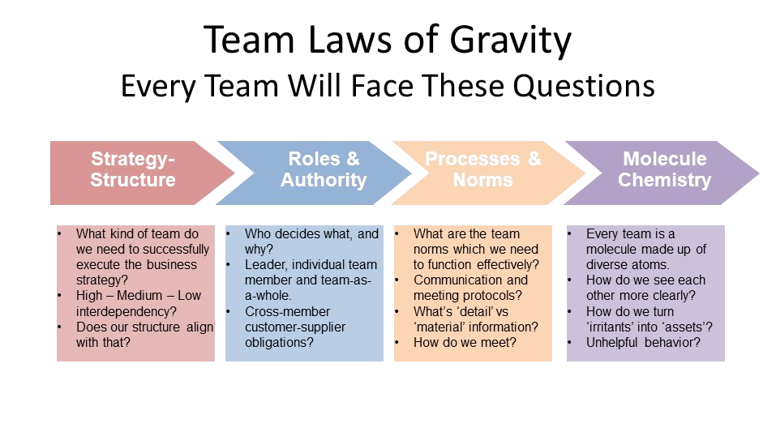

Team Optimization

Do you have the team the organization needs to be successful? If you do, you are in the tiny statistical minority.
Members of the Top Leadership Team are there because they vanquished their competitors. Executives are rewarded for selfishly ambitious behavior; not collaborative or sacrificial behaviors.
Executives need to learn how to be effective team members; some never do.
The well-functioning Top Leadership Team is the single most powerful capability available to the Top Leader. It is the horses pulling the wagon. It is also the model of culture that everyone in the organization looks to for direction about ‘what our culture really is’. Not what we say it is or publish in the annual report but what it really is day to day, as modeled in the ways the Top Leadership Team makes decisions, rewards and promotes, treat each other. Are we really taking risks to innovate, or is that just what we say we’re doing? Are we really rewarding unselfish collaboration, or is that just what’s on the posters in the conference room? One thing we can know with certainty: if we are not ‘really’ behaving as we say we do from ‘above’, no one ‘below’ is likely to tell us that.
When a leadership team models respect, collaboration along with constructive disagreement this is what will occur below in the organization. The famous quote As Above, so Below is never more true than in the modern organization. This is the good and bad news. When the Top Team is optimized powerful tail-winds accelerate everything they do. When the Top Team is sub-optimal, or dysfunctional it creates ‘drag’ and ‘head-winds’ that hold the organization back at best.
We have worked with dysfunctional teams, bringing them to strong performance – (usually with a different set of players.) We have worked with functioning teams who aspire to be high-performance teams. Top leaders fail to realize that optimizing their team is their highest priority and should come before other objectives. Why? Because the Top Team is the vehicle through which all achievements will occur. Developing a team, whether from dysfunction to functioning or functioning to high-performance is a complex process that even experienced Top Leaders need help in. Here are just a few highlights of what developing an effective team requires:
- Evaluating whether the right players are currently on the team is a challenging task that hinges on the question: Can this executive do the job required by the organization into the foreseeable future? If not, is that fixable with coaching of some kind? Or do you need a new player? Our Assessment tools bring clarity and an objective view on those questions.
- After the right players and structure is in place, what kind of team does the strategy and culture require? A high-performance basketball team with high cross dependencies? A ‘functioning’ baseball or track and field team each doing their own event but producing a roll up score, with some modest inter-dependencies? Or the golf foursome that is playing their own game and comparing scores at the end? Our Coaching and Team Optimization tools guide even experienced executives through an improvement process that is intentionally designed to minimize executive time with high-impact coaching.
- These are decisions that only the Top Leader has the authority to make. Once these foundational gates have been passed, there come a host of questions related to how the Top Team functions day to day. How does the Top Leader model and praise collaborative behavior? How is selfish or destructive executive behavior dealt with? How does the organizational structure promote or discourage collaborative behavior? How do team processes such as meeting frequency and agenda serve or inhibit trust and collaboration? How the Top Leader behaves toward the Top Team is what the actual, not aspired, culture will be.
These are complex and difficult questions that will always be improved through consultation with an expert in people and team optimization. Even the experienced Top Leader may not understand how critical this capability is for their own and the organization’s success. Dealing with complex, high-stakes people questions like, Can this person develop into the executive we need? are truly daunting decisions that can always be optimized with subject matter expertise that Chris Dawson has in depth and breadth. Regarding that particular ‘keep or develop’ decision, the majority will elect not to ‘rock the boat’. It is only after having made that decision to upgrade the talent that the organization sees what it had been missing. It is human nature to ‘punt’ on such people questions and they are objectively complex, high-stakes decisions.
Our deep and wide experience with numerous different kinds and levels of Top Leadership Teams in tandem with state of the art tools and methods make for a powerful coaching experience that few executives will not gain from. There are many ways to go about ‘fixing’ a broken team. There are just as many ways to go about taking an average team to a high-performance team. How the team goes about improving itself depends entirely on where they start from and where they want to go.
Our Approach to Team Optimization: What We Do
We start with a baseline assessment with the goal of answering the question: Is this team functioning at a level required by the organization to execute it’s strategy and align it’s culture with that strategy? The answer to this question is always a little different but one that requires the kind of expertise that Chris Dawson has provided to dozens of Top Leadership Teams during the course of his long consulting career.
After discussion of those baseline findings comes a set of plans aimed at ensuring the answer to all those questions is ‘mostly yes’. Sometimes the answer is ‘mostly yes’ but we have these couple straightforward changes we need to make – perhaps not requiring further external consultation. More often the answer is in the other direction. There is a team member or two, perhaps even the Top Leader whose behavior is holding the team back.
Occasionally the answer is: there are structural or process deficiencies that are sensitive and require changing team members or adopting new organizational structure to remedy the issue. Every organization is different; not every Top Leadership Team needs to be highly interdependent and the investment in getting there may not be worth the value that would accrue.
The majority of Top Leadership Teams are ‘track-and-field’ teams. The high jump, shot put, and 100-yard dash all do their event, pulling together to produce a winning score against other teams in a shared market environment. To become a Top Leader, requires ambitious drive and a good measure of self-confidence and self-sufficiency all of which are not conducive to collaborative team players. Unintentionally, Top Leadership Teams select people with qualities that are ill-suited for collaboration and humility. In fact, most Top Leadership Teams are focused on competing internally for resources, attention, and power. It becomes easier to minimize functional inter-dependence and keep score of each leader’s performance.
It is the rare organization in which this is an effective solution because producing a product always requires more than one set of skills. Siloed organizations are less effective than collaborative organizations, period. There really is little controversy about that fact.